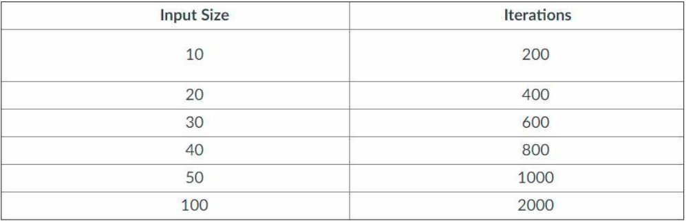
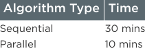

Lesson 1: Algorithms Solve Problems
Summary: In Lesson#1, we learnt how computer scientists think about problems and the way different algorithms can be designed to solve them. We also discovered different types of algorthims, Sequencing: Putting steps in an order (Step by step in order), Selection: Deciding which steps to do next (Conditionals -If else) and Iteration: Doing some steps over and over (Loop).
CFU: In your own words explain the difference between a problem and an algorithm.
Answer: A problem is a general description of task that can (or cannot) be solved with an algorithm. An algorithm is a finite set of instructions that accomplish a task.
Lesson 2: Algorithm Efficiency
Summary: In Lesson#2, we learnt how computers describe how fast different algorithms are and the fact that different algorithms that solve the same problem may be faster than other. We explored the effeciency a Binary and Linear search.
- CFU: What is the third step using Binary Search to look for the number 32 in this list: 1, 2, 3, 4, 10, 11, 16, 25, 32, 33, 45, 47, 51, 69, 75
Answer: Compare the number 33 to the given number
- Which of the following is true of two algorithms designed to solve the same problem?
Answer: It is possible for two algorithms with different efficiencies to solve the same problem
Lesson 3: Unreasonable Time
Summary: We explored two different types of algorithms that seem similar but take fundamentally different amounts of computing power to run.
-
CFU: Which of the follow efficiencies would be considered unreasonable?
Answer: 2^n (exponential)
-
CFU: A team of programmers is trying to determine the efficiency of a piece of code. They run the code with inputs of different sizes and also record the number of iterations through the core block of code. The data is recorded in the table below.

Based on the data provided, does this algorithm run in a reasonable or unreasonable time? Explain your answer
Answer: The reasonable and unreasonable algorithm is differentiated based on the growth rate of the iterations as input is increased. Since the algorithm does not grow exponentially, then we can conclude that the algorithm runs in a reasonable time. n = 20i ; number of iterations ; i = input size.
Lesson 4: The Limits of Algorithms
Summary:In Lesson#4, we explored two different kinds of problems at the limits of what a computer is capable of solving and learn the difference in how computer scientists respond.
- CFU: In which of the following situations is it most appropriate to use a heuristic solution?
Answer: The only algorithms that provide exact solutions run in unreasonable time but exact solutions are not necessary.
- CFU: Problems that are undecidable and algorithms that are unreasonable both touch on the limits of the kinds of computing that a computer can accomplish. In your own words, explain the difference between undecidable problems and unreasonable time algorithms.
Answer: Undecidable problems are issues with no solution. They should give a "yes" or "no" answer, but no algorithm can answer correctly on all inputs. A famous undecidable problem is the Halting problem in computability theory. Unreasonable algorithms grow exponentially. The time to solve an unreasonable algorithm grows quickly, even for relatively small problem sizes.
Lesson 5: Parallel and Distributed Algorithms
Summary: In Lesson #5, learnt how algorithms are designed to run on many computers and the benefits and challenges that result.
-
CFU: An algorithm was initially written sequentially. Later it was determined that a parallel solution was possible and so the algorithm rewritten. The times to run each version of the algorithm are included in the table below.

What is the speedup of this parallel solution?
Answer: 3
-
Parallel algorithms typically will be faster than sequential algorithms, and as you run the process on more computers it will continue to grow faster. In your own words, explain why the speedup of a parallel algorithm will eventually reach some limit.
Answer:In a parallel algorithm, every time a new processor is added, each one helps a little less. Due to this decline, the speedup eventually reaches a ceiling.